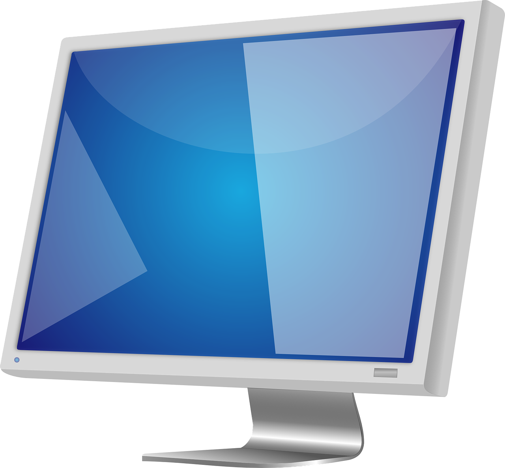

Sobre Nós
A Vistalux Displays nasceu em 2012, fruto da paixão de três engenheiros por excelência visual e inovação contínua. Desde então, temos evoluído para oferecer monitores de alta performance, desenvolvidos para atender aos ambientes mais exigentes — de estúdios de design e laboratórios científicos a estações de batalha gamer.
Nosso portfólio reúne tecnologias de ponta como OLED, Mini-LED e painéis ultrawide, sempre focadas em nitidez, cores precisas e ergonomia. Cada produto passa por rigorosos testes de durabilidade e eficiência energética, alinhado ao nosso compromisso com práticas sustentáveis.
Com presença consolidada no Brasil e em 6 países da América Latina, atendemos desde grandes corporações e instituições de ensino até entusiastas de performance visual. Nosso suporte técnico de alta qualidade garante atendimento rápido e soluções personalizadas.
Vistalux — transformando visão em experiência.
